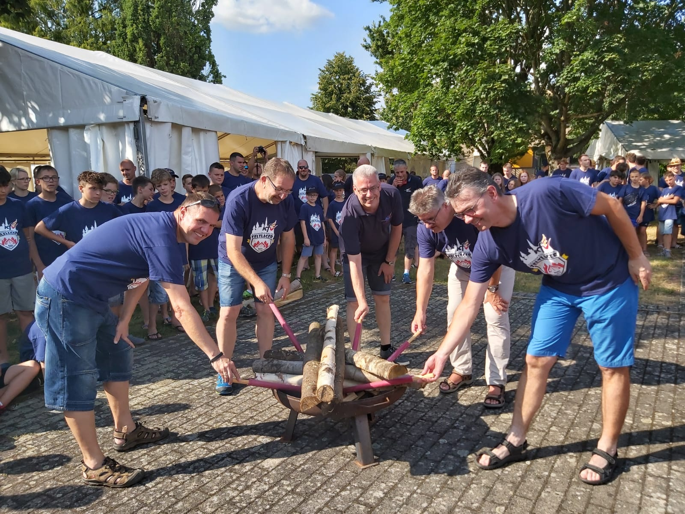

Aktionen
Neben den normalen Proben machen wir viele Ausflüge als Team. Wir gehen Kanu fahren, ins Zeltlager oder auch kleinere Ausflüge wie Minigolfen. Wir wollen euch einen kleinen Einblick geben was wir bisher schon erlebt haben.
 |
Zeltlager 2017 Hier sieht man eine Collage aus dem Zeltlager 2017. Zeltlager finden immer in der ersten Woche der Sommerferien statt, dabei sind alle Feuerwehren des Landkreises Rastatt. Dieses mal fand es in Gaggenau statt, im
geschlossenen Waldseebad. |
|  |
Zeltlager 2019Auch 2019 gab es wieder ein Kreiszeltlager. Diesmal fand es in Bühl an einer Schule statt. Wir hatten die Sanitäranlagen der Sporthalle und den ganzen Außenbereich für uns. Wie jedes mal gab es eine Stadtrallye und andere Aktionen wie eine Lagerolympiade und verschiedene Workshops. Aber es mussten auch Schichten zum Putzen oder Geschirrspülen eingeteilt werden. Mehr zum Zeltlager 2019 |
KanufahrenKanufahren machen wir so gut wie jedes Jahr. Manchmal mit anderen Feuerwehren oder alleine. Wir fahren dazu immer nach Frankreich und fahren dann mit dem Strom wieder zurück. Es ist zwar sehr anstrengend aber es macht auch mega Spaß. In ein Kanu passen je nachdem 4 Leute und man muss sich beim paddeln sehr gut absprechen sonst kommt man nicht weit, oder man fährt ins Gebüsch, und das ist schon extrem oft passiert! |
|
DrehleiterübungDa wir nur eine kleine Feuerwehr sind, haben wir nur ein Löschfahrzeug. Da wir aber auch andere Bereiche üben müssen, haben wir uns mit der Feuerwehr aus Kuppenheim abgesprochen um eine Hausrettung mit einer Drehleiter zu üben. Es gab ein gespieltes Opfer das aus einem Haus gerettet werden musste. Gerade für unsere Feuerwehr war das mal etwas ganz Neues und es erforderte gute Vorbereitung. Die Drehleiter kann über 20 Meter hoch gefahren werden. Sieh dir unten ein Video an wie das abläuft: |